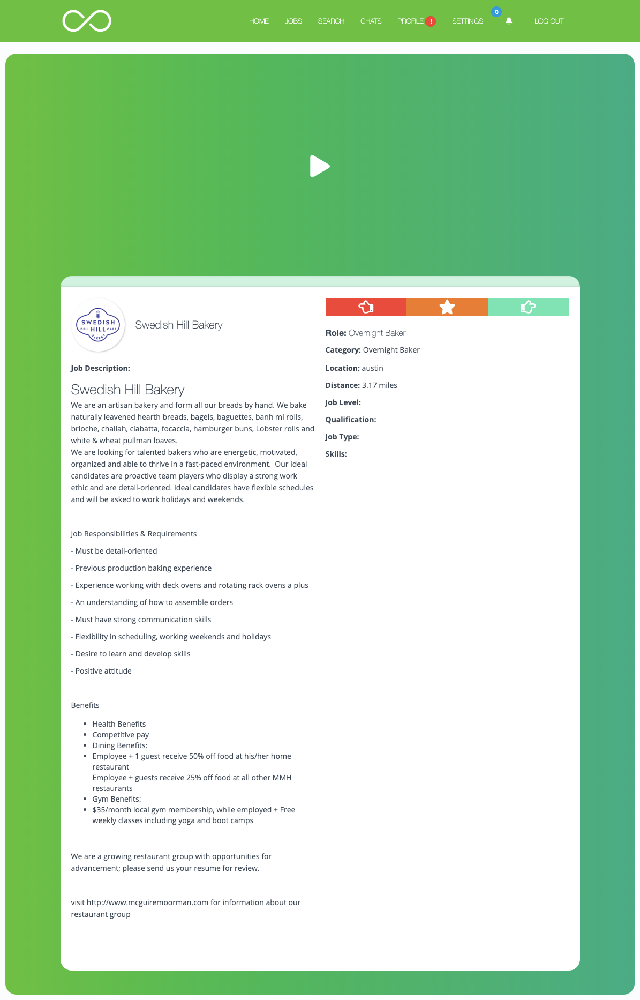

This content is password protected.
Please contact Fergie for access

Cambio
Introduction
Cambio is working to change the job hunt and bring individuality into the recruitment process. In Spanish, Cambio means “change”. In an effort to change the stale process, Cambio has created a video platform that allows job applicants to personalize applications.
My Role
- Research
- UX/UI Design
- Web Design
- Branding
Context
This is an age defined and forever changed by digital interactions: online dating, grocery shopping, medical prescriptions, etc. However, with all of the time saving technological advancements, their remains many areas where real human connections should be maintained: employment-oriented services.
Assisting Cambio in their quest to bring life to this process of job searching and hiring, I set out to understand the disconnect between the job seeker and businesses. Bringing my unique Human Resources background, I analyzed competitors and sought out the gaps in current platforms.
My Goal
I set out to design a web based platform that connects job seekers and employers. Unlike resumes, users needed to be connected faster and authentically.
Problem Statement
How can we enhance human interaction and the speed of connection in the job market?
Sub Questions
How do we attract the right audience in both markets?
How do we create a seamless, informative and easy onboarding experience?
How can the platform serve the interest of both job seekers and employers?
Research & Inspiration
I conducted a competitive analysis focusing on tools and resources; onboarding experiences; and user interactions. I was inspired by the vastly different ways that job sites were structuring UI and navigation.
Journey Map
In wanting to make sure that our experience stayed on par with the competition, it was imperative that the user journey was strong. The journey map was created to provide structure and a clear path for both sides of the application.
Wireframes
Taking into account the user flow I created wireframes to plan users’ experiences from their perspective landing pages to matching a job/candidate. Wireframes were then presented to stakeholders and iterated upon.
Branding
The name Cambio has a strong Spanish meaning, “to change”. I wanted to ensure that the logo was just as powerful. I came up with the idea of an infinity symbol. The job market has such a cyclical nature. At one minute a user could be applying for jobs while the next, they are searching for someone to fill a vacant role on their team. The process of change and growth is a continuous cycle.
The Solution
By creating strong user flows that work in parallel to move both job seekers and employers to a match, we were able to create a strong platform for both sets of users.
Landing Page
The landing page provides general information and works to navigate users to the correct side of the application. Job seekers and employers then branch off to their perspective landing pages with more detailed information and begin the process of creating a profile.
Account Activation
Users have the option to sign up via email or with their LinkedIn credentials. Upon acceptance to Cambio, users are sent a generated welcome email.
User Profile
On the initial login, users are provided an interactive tour with useful tips. The tour ends by prompting users to create a profile for themselves or their company. Users have the option to integrate with LinkedIn and quickly add work history.
Search Jobs & Swipe
Users are taken to the job search screen when they complete their profile and after all other successful logins. Bringing the typically mobile interaction of swiping beyond our mobile web experience to the desktop, users are able to quickly sort through jobs and applications. Both job seekers and employers see the full job description before swiping to make their decisions.
Connection
Job seekers that swipe left for employers will be notified if their connection is accepted. Users are then able to begin chatting.
Thoughts & Learning
Cambio was the first project that I worked on in which I was given full autonomy to take an idea and create a product. I had to elevate my creative problem solving skills to really understand the vision and build the brand. While building upon my skills as a researcher and quickly understanding the job industry.
Working on the web, I discovered the powerful ways in which micro and macro interactions shape the way we interact with humans in person and digitally. I had to understand and account for the fact that in this digital age, we all still seek connection and human interaction. We made it possible to solve these problems digitally while saving time and not forfeiting authenticity.